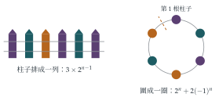

STEP II 1995，第 2 題
繼續之前，請先閱讀題目（原題為英文）。題目載於 STEP Support Programme 的題目資料庫： step.maths.org/questions/95-s2-q2
引子
為排成一列的柱子髹色很容易：第一根有 \(3\) 種選擇，其後每根各有 \(2\) 種（只要不與前一根同色即可），共有 \(3 \times 2^{n-1}\) 種髹法。把這一列彎成一個圓圈，問題卻變得出奇地棘手，因為最後一根柱子既要與相鄰的前一根不同色，又要與第一根不同色，而這究竟排除了一種顏色還是沒有排除任何顏色，取決於前面所有柱子的髹法。
題目用一個經典技巧繞過這個難處：按最後一根柱子的顏色把計數分成幾種情況，再找出各種情況之間如何互相轉化。答案 \(2^n + 2(-1)^n\) 是色多項式（chromatic polynomial）的第一個例子，而色多項式正是四色定理（four colour theorem）背後的數學的一部分。
動筆之前
數一數為圍成一圈的 \(3\) 根柱子髹色有多少種方法，\(4\) 根又有多少種。\(3 \times 2^{n-1}\) 有沒有多算？多算了多少？
圍成一圈的三根柱子兩兩相鄰，所以需要三種不同的顏色：共 \(3! = 6\) 種方法。圍成一圈的四根柱子：\(18\) 種方法（你可以在最後驗證這一點）。與排成一列時的 \(3 \times 2^2 = 12\) 和 \(3 \times 2^3 = 24\) 比較：圓圈少了的，正是最後一根柱子與第一根同色的那些着色。
逐步解題
階段 1 兩類着色
考慮 \(n + 1\) 根柱子的一種着色（colouring），其中第一根和最後一根都是紅色。把最後一根柱子拿走。餘下的首 \(n\) 根柱子的着色有甚麼特點？
第 \(n\) 根柱子與第 \(n + 1\) 根相鄰，而後者是紅色，所以第 \(n\) 根不是紅色。拿走第 \(n + 1\) 根後，剩下的是 \(n\) 根柱子的一種着色，其中第一根是紅色而最後一根不是紅色：這正是 \(s_n\) 種着色之一。反過來，\(s_n\) 種着色中的任何一種都恰好有一種方法延伸，就是把第 \(n + 1\) 根柱子髹成紅色。所以兩個集合完全對應，\(r_{n+1} = s_n\)。
\(r_n + s_n\) 是甚麼？
每一種第一根柱子為紅色的着色，其最後一根柱子不是紅色就是非紅色，所以 \(r_n + s_n\) 數的是 \(n\) 根柱子中第一根為紅色的全部着色。第一根之後，每根柱子有 \(2\) 種選擇，所以 \(r_n + s_n = 2^{n-1}\)。因此 \[r_{n+1} + r_n = s_n + r_n = 2^{n-1}. \qed\]
階段 2 用數學歸納法（induction）證明公式
當 \(n = 1\) 時只有一根柱子，髹成紅色，所以 \(r_1 = 1\)，而公式給出 \(\frac13(1 + 2) = 1\)。假設公式對 \(r_n\) 成立。那麼 \[r_{n+1} = 2^{n-1} - r_n = 2^{n-1} - \frac{2^{n-1} + 2(-1)^{n-1}}{3} = \frac{2 \cdot 2^{n-1} - 2(-1)^{n-1}}{3} = \frac{2^n + 2(-1)^n}{3},\] 這正是 \(r_{n+1}\) 的公式。■
這條公式從何而來？遞歸關係（recurrence relation）\(r_{n+1} + r_n = 2^{n-1}\) 就像一條微分方程（differential equation）：解是一個「特解」（particular solution）\(c \cdot 2^n\) 加上一個滿足 \(r_{n+1} + r_n = 0\) 的「餘函數」（complementary function）\(A(-1)^n\)。求 \(c\) 和 \(A\)。
階段 3 圓圈
在 \(n\) 根柱子圍成的圓圈中，固定第 \(1\) 根柱子的顏色，例如紅色。現在在第 \(n\) 根與第 \(1\) 根柱子之間把圓圈剪開，拉直成一列。哪些直列着色對應於合乎要求的圓圈着色？
拉直之後，圓圈變成由紅色開始的一列 \(n\) 根柱子，其中最後一根還必須與第 \(1\) 根不同色：最後一根不是紅色。這些正好就是那 \(s_n\) 種着色。第 \(1\) 根柱子可以是 \(3\) 種顏色中的任何一種，所以圓圈着色的數目是 \[3s_n = 3(2^{n-1} - r_n) = 3 \cdot 2^{n-1} - 2^{n-1} - 2(-1)^{n-1} = 2^n + 2(-1)^n. \qed\] 驗算：\(n = 3\) 給出 \(8 - 2 = 6\)，而 \(n = 4\) 給出 \(16 + 2 = 18\)。

回顧
分成互相轉化的情況。記下最後一根柱子是否紅色，便得到兩個數列 \(r_n\) 和 \(s_n\)，它們由簡單的遞歸關係聯繫起來。
雙射（bijection）。\(r_{n+1} = s_n\) 是靠把着色一一配對來證明的，而不是靠計算。
剪開圓圈。一個循環的問題變成了一個對兩端附加條件的直線問題。
背後的數學
色多項式
柱子和它們之間的相鄰關係構成一個圖（graph）：排成一列時是一條路徑（path），圍成一圈時是一個圈（cycle）。正常着色（proper colouring）給相鄰的頂點（vertex）不同的顏色。用 \(k\) 種顏色的正常着色數目是 \(k\) 的一個多項式，稱為該圖的色多項式，由伯克霍夫（George Birkhoff）於 1912 年引入。用 \(k\) 種顏色重複題目中的論證，可得 \[\text{路徑：} k(k - 1)^{n-1}, \qquad \text{圈：} (k - 1)^n + (-1)^n(k - 1).\] 取 \(k = 3\)，圈的公式就是 \(2^n + 2(-1)^n\)。伯克霍夫希望透過證明每幅地圖所對應的圖的色多項式在 \(k = 4\) 時為正數，從而證明四色定理（每幅地圖都可以用四種顏色着色，使相鄰的國家顏色不同）。這個方法始終未能成功；定理最終在 1976 年由阿佩爾（Kenneth Appel）和哈肯（Wolfgang Haken）借助大量電腦運算證明。色多項式至今仍是一個活躍的研究領域，並與統計物理（statistical physics）有出人意表的聯繫：在那裏它們以描述磁性的波茨模型（Potts model）的形式出現。
用矩陣數出同一個答案
還有另一種方法可以看出答案，用的是第 7 章的線性代數（linear algebra）。設 \(\mathbf{M}\) 為對角線上是 \(0\)、其餘位置是 \(1\) 的 \(3 \times 3\) 矩陣：當顏色 \(j\) 可以跟在顏色 \(i\) 之後時，第 \((i, j)\) 項為 \(1\)。那麼 \(\mathbf{M}^{n-1}\) 的第 \((i, j)\) 項數的是由顏色 \(i\) 開始、以顏色 \(j\) 結束的直列着色，所以 \(r_n\) 是 \(\mathbf{M}^{n-1}\) 的一個對角線項。圓圈着色是經過 \(n\) 步後回到起點的一個序列，所以圓圈着色的數目就是 \(\mathbf{M}^n\) 的跡（trace）。由於 \(\mathbf{M} = \mathbf{J} - \mathbf{I}\)，其中 \(\mathbf{J}\) 的每一項都是 \(1\)，\(\mathbf{M}\) 的特徵值（eigenvalue）是 \(3 - 1 = 2\)（特徵向量（eigenvector）為 \((1, 1, 1)\)）和 \(-1\)（兩重），而 \(\mathbf{M}^n\) 的跡是各特徵值的 \(n\) 次方之和： \[\operatorname{tr}\mathbf{M}^n = 2^n + (-1)^n + (-1)^n = 2^n + 2(-1)^n.\] 這種轉移矩陣（transfer matrix）方法在組合數學（combinatorics）和統計物理中隨處可見，用來數算逐步構造出來的排列。
思維技巧
當一個數列單靠自己無法滿足簡單的遞歸關係時，不妨多記錄一點資料（這裏是最後一根柱子的顏色），再找出聯繫各種情況的遞歸關係。
這就是狀態（state）的概念：只記下繼續下去所必須知道的資料，不多也不少。它是電腦科學中動態規劃（dynamic programming）的基礎，也是概率中馬可夫鏈（Markov chains）（第 12.16 節）和轉移矩陣方法的基礎。
延伸練習
\(k\) 種顏色。用 \(k\) 種顏色重做這道題。證明 \(r_{n+1} = s_n\) 仍然成立，並且 \(r_{n+1} + r_n = (k-1)^{n-1}\)，求 \(r_n\)，並由此推導出圈的色多項式 \((k - 1)^n + (-1)^n(k - 1)\)。
沒有兩根紅柱相鄰。把排成一列的 \(n\) 根柱子髹成紅色或白色，而且沒有兩根相鄰的柱子同為紅色，共有多少種方法？（你應該會得到斐波那契數（Fibonacci numbers）。）
輪子。加一根位於中心的柱子，與圓圈上的每根柱子都相鄰（一個「輪子」）。用 \(4\) 種顏色為它着色有多少種方法？（提示：中心用去一種顏色，圓圈必須使用其餘三種。）
項鏈。如果圓圈的兩種着色在其中一種可由另一種旋轉而得時視為相同，那麼當 \(n = 4\) 時有多少種不同的着色？\(n = 5\) 時呢？（這是伯恩賽德引理（Burnside’s lemma）的開端。）
延伸閱讀
Robin Wilson, Introduction to Graph Theory（Pearson）。標準的圖論入門教材；涵蓋着色和四色問題。
Robin Wilson, Four Colours Suffice（Penguin）。四色定理的故事，為一般讀者而寫。
Herbert Wilf, generatingfunctionology（可在網上免費閱讀）。講述遞歸關係及其解法，包括轉移矩陣方法。